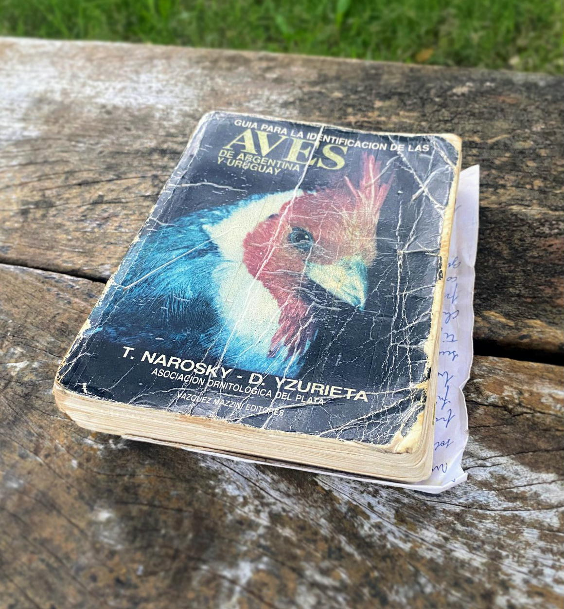

Una vida de observación, viajes y naturaleza
Esta recopilación fotográfica ha sido realizada con mucho empeño, dedicación y amor por la naturaleza por Héctor Chevalier y Marta S. García.
Desde Bahía Blanca,y recorriendo gran parte de la República Argentina, fueron construyendo esta colección con una mirada paciente, sensible y profundamente respetuosa del entorno natural.
Este trabajo detallado es el resultado de más de 30 años de observación, registro, viajes y organización. Representa no solo un valioso archivo fotográfico, sino también una forma de amor por las aves, los paisajes y la biodiversidad de nuestro país.
Esta biblioteca visual busca dar forma y compartir ese enorme trabajo de recopilación, para que pueda ser apreciado y recorrido de manera clara, ordenada y accesible. Aquí no está reunido el registro fotográfico de todas las especies de la guía de referencia, sino de una gran parte de ellas, por lo que la recopilación, los viajes, los registros y las fotografías seguirán creciendo y actualizándose con el tiempo, con la misma dedicación de siempre.
La guía que acompaña décadas de registro
Durante todos estos años, una referencia fundamental para identificar, ordenar y seguir el registro de especies fue la Guía para la identificación de las aves de Argentina y Uruguay, de Narosky & Yzurieta, una de las obras de campo más utilizadas y valoradas por observadores de aves en nuestro país.
Práctica, clara y confiable, esta guía acompañó salidas, viajes y momentos de consulta, y fue una herramienta esencial para dar continuidad y criterio a más de tres décadas de registro fotográfico.
